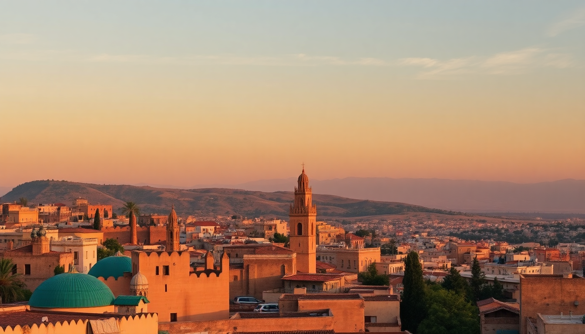

Where to Stay in Fes: Best Neighborhoods for Every Budget

I landed in Fes with a backpack and no hotel booked, thinking I'd just "figure it out" once I got to the medina gates. That was a mistake. The maze of alleys doesn't care about your jet lag. After three trips and a dozen different beds across this city, I’ve got a clear picture of where you should actually sleep — based on your budget, your patience for noise, and your tolerance for negotiating with donkey carts at 6 AM.
Should you stay inside the Fes medina or outside it?
The medina (Fes el-Bali) is the reason most people come here — it’s a living medieval city with tanneries, spice stalls, and mosques so old they predate the printing press. Staying inside means you’re steps from everything, but it also means navigating alleys too narrow for cars. You’ll carry your own luggage, or pay a porter 20–50 dirhams to haul it. The noise is constant: call to prayer, hammering in metal workshops, and kids playing soccer at midnight.
Outside the medina, in the Ville Nouvelle (the French-built new town), you get wider streets, proper sidewalks, and modern hotels with parking. The trade-off is a 20–30 minute walk or a short taxi ride to the medina gates. Most first-time visitors should spend at least two nights inside the medina for the experience, then move to the Ville Nouvelle if they want quieter sleep.
- Fes el-Bali (Old Medina): Authentic, chaotic, no cars, tons of riads. Best for culture seekers.
- Fes el-Jdid (Jewish Quarter): Quieter than the old medina, wider streets, fewer tourists. Good for a middle ground.
- Ville Nouvelle: Modern cafes, banks, chain hotels. Boring but functional. Best for business travelers or light sleepers.
What is the best budget-friendly area in Fes?
The northern edge of the medina, near Bab Bou Jeloud (the famous blue gate), is packed with cheap guesthouses. We stayed at Dar Anebar — a basic but clean riad with a rooftop terrace where you can watch the sunset over the minarets. It cost us about 200 dirhams per night (around $20 USD) in shoulder season. Breakfast was bread, jam, and mint tea. No frills, but the host walked us to the tanneries for free.
If you want something slightly nicer but still under $50, try Riad Laaroussa in the heart of the medina. The tiles are original, the courtyard has a small fountain, and the staff will draw you a map on a napkin. They also serve a proper tagine dinner for 80 dirhams if you’re too tired to go out.
- Dar Anebar — rock-bottom budget, friendly host, near Bab Bou Jeloud.
- Riad Laaroussa — mid-range, beautiful courtyard, good food.
- Hotel Batha — on the edge of the medina, close to the taxi stand, clean but dated.
Where should I stay for a mid-range experience with character?
For around $80–$120 per night, you can get a room in a restored palace that used to belong to a wealthy merchant family. Palais Amani is my favorite in this bracket. It’s tucked deep in the medina near the tanneries, but the staff will meet you at the nearest car-accessible point and escort you in. The rooms have high cedar ceilings, hand-painted plaster, and modern bathrooms — a rare combo in the old city. The rooftop pool is small but a lifesaver in August.
Another solid option is Dar Seffarine, right next to the University of Al Quaraouiyine (the world’s oldest university). You’ll hear students chanting prayers in the morning, which feels like a privilege rather than a nuisance. The rooms are simpler than Palais Amani, but the location is unbeatable for history buffs.
- Palais Amani — boutique luxury, rooftop pool, excellent tagine cooking class.
- Dar Seffarine — historic setting, next to the university, quieter courtyard.
- Riad Fes Maya — slightly outside the medina in the Ville Nouvelle, but has a pool and parking.
Is the Ville Nouvelle a good choice for first-time visitors?
Only if you value convenience over atmosphere. The Ville Nouvelle is where the train station, the airport bus, and most of the chain hotels are. We stayed at Hotel Volubilis on Avenue Hassan II — it’s a 3-star with a decent breakfast buffet and rooms that wouldn’t offend anyone. It worked for a single night before an early train to Marrakech.
The downside is that you’re disconnected from the medina’s energy. You’ll need to take a petit taxi (about 15 dirhams) to Bab Bou Jeloud each time. And the Ville Nouvelle lacks the food scene of the old city — most restaurants serve French-Moroccan fusion that’s fine but forgettable. If you’re on a strict schedule or traveling with heavy luggage, this is your best bet.
- Hotel Volubilis — reliable, near the train station, good for a stopover.
- Palais Medina & Spa — 5-star, large pool, but feels like a resort anywhere in the world.
- Café Clock (Ville Nouvelle branch) — not a hotel, but a good spot for lunch if you’re in the area.
Which neighborhood is best for luxury travelers?
Fes doesn’t have the mega-resorts you’ll find in Marrakech, but it has a handful of seriously high-end riads. La Maison Bleue in Fes el-Bali is the gold standard — a 19th-century palace turned hotel with only 10 rooms, each one different. The courtyard is a mosaic of zellij tiles, and the dinner service is a multi-course affair with live Andalusian music. Rates start around $250 per night, but you’re paying for the kind of quiet you can’t find anywhere else in the medina.
For something more modern, Fes Marriott Hotel Jnan Palace sits in the Ville Nouvelle with a massive pool, a spa, and conference rooms. It’s not “authentic,” but it’s comfortable. If you’re coming from a long-haul flight and want a proper bed without any “riads are drafty” complaints, this is your place.
- La Maison Bleue — intimate, historic, exceptional food.
- Fes Marriott Hotel Jnan Palace — modern luxury, pool, reliable Wi-Fi.
- Riad Fes — 5-star in the medina, spa hammam, but a bit touristy.
What about staying near the tanneries or Bab Rcif?
The area around the Chouara Tannery is the most touristy part of the medina. It smells like pigeon droppings and ammonia (you’ll get a sprig of mint to hold under your nose). Staying here means you’re in the thick of it — constant touts, aggressive guides, and leather shops that triple prices for foreigners. I wouldn’t recommend sleeping here unless you have a high tolerance for hassle.
Bab Rcif, on the other hand, is a quieter gate on the southern edge. It’s less polished than Bab Bou Jeloud, but the riads here are cheaper and the streets are less crowded. We had a great meal at Restaurant Rcif — a rooftop spot overlooking the gate, serving decent couscous and grilled meats. The neighborhood feels more like real Fes and less like a tourist set.
- Chouara Tannery — iconic sight, but exhausting to stay near.
- Bab Rcif — underrated, cheaper riads, good local food.
- Restaurant Rcif — rooftop dining, affordable, no pressure to buy anything.
FAQ
Is it safe to walk around Fes at night? Yes, within the medina and Ville Nouvelle. The medina gets dark and empty after 9 PM — stick to main thoroughfares like Talaa Kebira. I walked back from Bab Bou Jeloud to my riad at midnight without issues, but I wouldn’t wander into unlit side alleys alone. The Ville Nouvelle is well-lit and has police patrols.
Do I need to tip the porter who carries my bags in the medina? Yes. Most riads don’t have car access, so a porter will meet you at the nearest gate and carry your luggage through the alleys. Tip 20–50 dirhams depending on distance and number of bags. It’s a fair wage for hard work — don’t haggle.
Can I get a taxi from Fes airport to the medina? Yes. Grand taxis (older Mercedes sedans) charge a fixed 120–150 dirhams to the medina gates. Petit taxis (smaller cars) are cheaper but can’t enter the medina — they’ll drop you at Bab Bou Jeloud. Both are available outside arrivals. Don’t pay more than 200 dirhams.
Conclusion
- Budget travelers: Stay near Bab Bou Jeloud at Dar Anebar or Riad Laaroussa for under $50/night.
- Mid-range: Splurge on Palais Amani or Dar Seffarine for character and comfort.
- Luxury: Book La Maison Bleue for an unforgettable palace experience.
- Convenience seekers: Choose the Ville Nouvelle with Hotel Volubilis or Fes Marriott.
- Avoid: The immediate area around Chouara Tannery unless you love crowds and sales pitches.